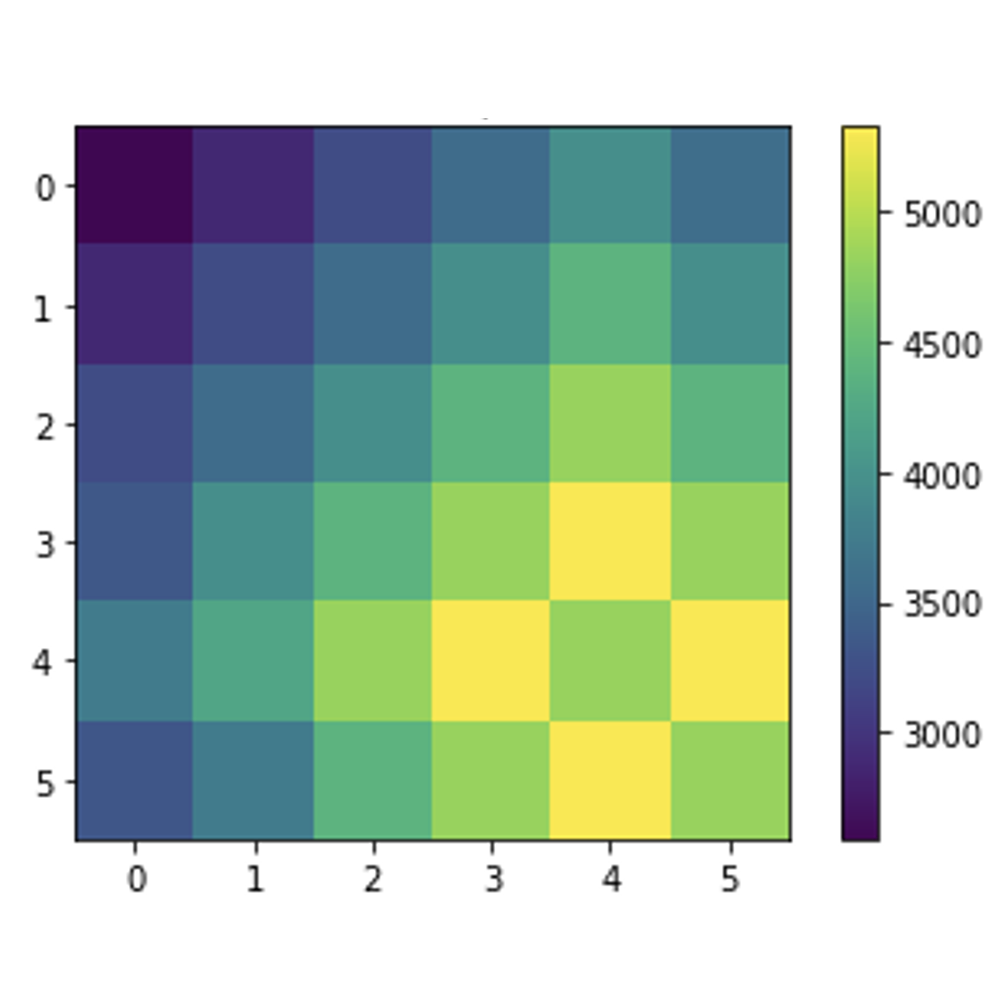

I am a Ph.D. candidate, advised by Dr. Goldie Nejat, at the University of Toronto Robotics Institute, where I work on deep reinforcement learning for multi-robot coordination in unknown, unstructured, and communication-limited environments.
Previously, I worked on a multi-wheeled mobile robotic system with Dr. Moustafa El-Gindy and vision-based mobile manipulator control with Dr. Haoxiang Lang.
During my internship at General Motors, I worked on rider sweat prediction for the ARIV E-Bike project.
Outside of my primary research, I collaborate with Dr. Edward Margolin and Dr. Matthew Schlenker to develop AI-based tools to enhance cataract surgery and disease detection.
I am also a machine learning and robotics consultant at SmartARM.
I have worked on novel hardware designs for mobile robots, as well as autonomous navigation and multi-robot cooperation to address the challenges of rough terrain, cluttered and communication-limited environments.
The first Macro Action Decentralized Exploration Network (MADE-Net) using multi-agent deep reinforcement learning to address the challenges of communication dropouts during multi-robot exploration in unseen, unstructured, and cluttered environments.
Our model demonstrated a higher accuracy and precision than both a modern IOL power formula (Barrett Universal II) and two classical ML approaches in predicting postoperative refraction in our data set of 2490 eyes.

Dynamic and Distributed Decision Making Aaron Hao Tan, 2020
MDP
/
RL
/
MARL
Implemented value/policy iteration, Monte Carlo, QLearning, SARSA, TD-Lambda, Shapley's Value Iteration and Minimax QLearning
Internship project at General Motors on a pedal-assisted power mode based on rider sweat onset prediction using machine learning, to enable rider to arrive without breaking a sweat.
2022 W: MIE443: Mechatronics Systems: Design & Integration Tutorial TA 2022 W: ENH610: Parasitology and Pest Control Lab TA 2021 W: MIE443: Mechatronics Systems: Design & Integration Tutorial TA 2020 W: MIE443: Mechatronics Systems: Design & Integration Lab TA 2019 W: MECE3390U: Mechatronics Head TA 2018 F: MECE2230U: Statics Head TA 2018 W: MECE3390U: Mechatronics Head TA (Course Evaluation) 2017 F: MECE3350U Control Systems Head TA (Course Evaluation)
{kind=link}